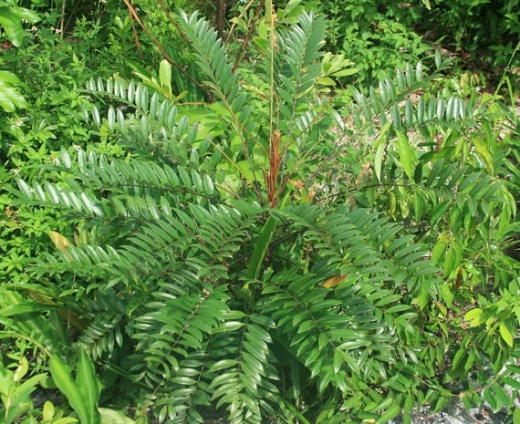
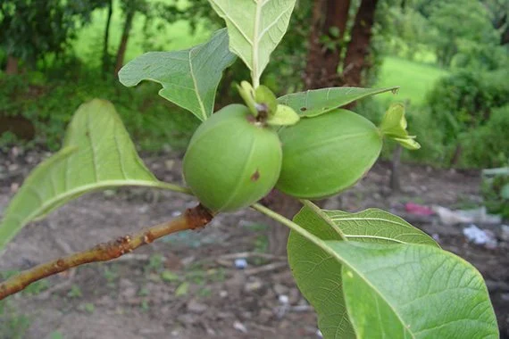
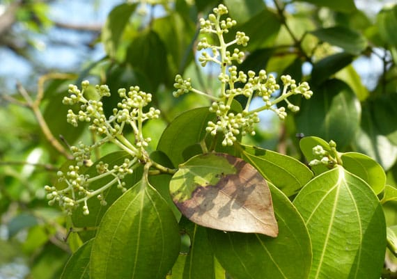

สมุนไพรไทย 22 ชนิดที่เสี่ยงอาจจะสูญพันธุ์
เนื่องจากเป็นสมุนไพรที่เติบโตช้าเมื่อจะใช้ต้องใช้ทั้งต้น บางชนิดใช้ทั้งรากหรือต้องใช้บ่อยจึงจะสามารถรักษาอาการได้ ได้แก่สมุนไพรดังต่อไปนี้
- 1. ถั่วดินโคก หรือ พิษนาศน์
- 2. เทพทาโร
- 3. มะตูมนิ่ม
- 4. มะหาด
- 5. เร่ว
- 6. หัวร้อยรู
- 7. กระทุ่มนา
- 8. ขันทองพยาบาท
- 9. จุกโรหินี
- 10. ชะเอมไทย
- 11. ชิงชี่
- 12. ตับเต่า
- 13. นางแย้มป่า
- 14. ปลาไหลเผือก 
- 15. พังคี
- 16. มะคังแดง 
- 17. สะค้าน
- 18. สารภีป่า
- 19. อบเชยไทย 
- 20. เฉียงพร้านางแอ
- 21. เถาเอ็นอ่อน
- 22. เปราะหอม